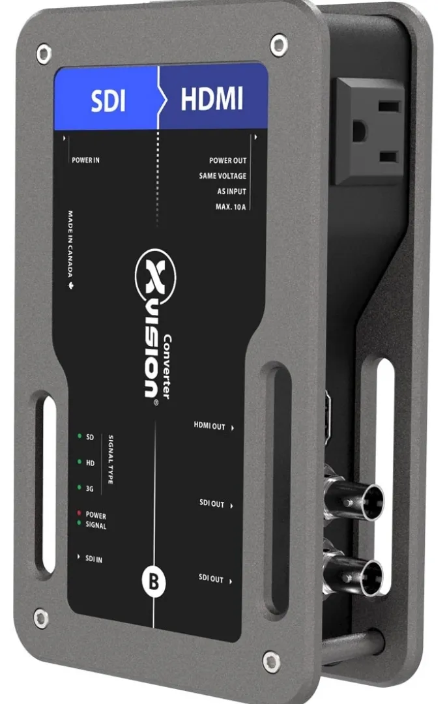

手配前
送り元がSDI、受け側がHDMIであることと、双方が扱える解像度・フレームレートを照合します。
映像をつなぐ・整える ↗EQUIPMENT / 79
SDI・HDMI変換
SDIで届く映像を、HDMIモニターへ。表示とSDI中継を1台でまとめます。
KEY SPECIFICATIONS

画像を大きく見る ＋画像出典：Theatrixx 製品ページ
01 / ROLE & FLOW
役割を表す説明図です。実際の配線・端子構成は案件に合わせて決めます。
02 / BEFORE YOUR BRIEF
送り元がSDI、受け側がHDMIであることと、双方が扱える解像度・フレームレートを照合します。
型式末尾まで照合し、本体に合う電源・SDI・HDMIケーブルをそろえます。
本線へ影響しない試験系統で、実機の出力色形式・レンジと表示先の受信設定を照合します。画面の四隅、文字、動き、黒つぶれ・白飛び、必要な音声を確認します。
03 / CHOOSING THE RIGHT TOOL
カメラや映像スイッチャーからのSDI映像を、HDMI入力の確認用画面へ渡したい場面に向いています。SDI中継を使えば、同じ入力を別のSDI機器にも送れます。
HDMIからSDIへの逆変換には使えません。4K／12G-SDIモデルとは別機種です。入力の自動判別は、受け側が対応しない形式まで表示できる保証ではありません。映像が途切れる、音が欠ける場合は本番接続を止め、映像担当者が信号形式と配線を点検します。
2系統のSDI出力は入力信号を整えて送り直す中継です。独立した2つの映像を作る機能ではありません。 XVVSDI2HDMIはpowerCON入力のモデルです。XVVSDI2HDMIT1や末尾12Gの機種と、電源端子・電圧や対応信号を混同しないように選びます。 公式仕様はAC100～120V・15Wです。電源担当者が実機銘板、供給電圧、接地とケーブルを照合して給電します。補助コンセントは入力と同じ電圧で、変圧しません。負荷の追加は電源担当者が管理します。 ケーブルで本体や端子を引かない位置へ置きます。磁石だけで吊り下げず、吊り取付けは担当者が適合金具と方法を確認します。使用するHDMI・SDIの全出力先で映像と音声が安定したら、接続内容を記録します。
参考資料：Theatrixx 製品仕様・データシート ↗（2026年11月5日照合）
日程・台数・受渡し方法、接続する機器と信号形式、電源／映像ケーブルの必要数、配送・設営・調整・操作員の希望範囲をお聞かせください。本体・周辺機材・搬入出・設営・本番操作・撤去を分けて、必要な範囲を整理します。セットの付属品や人員が自動で含まれる表示ではありません。